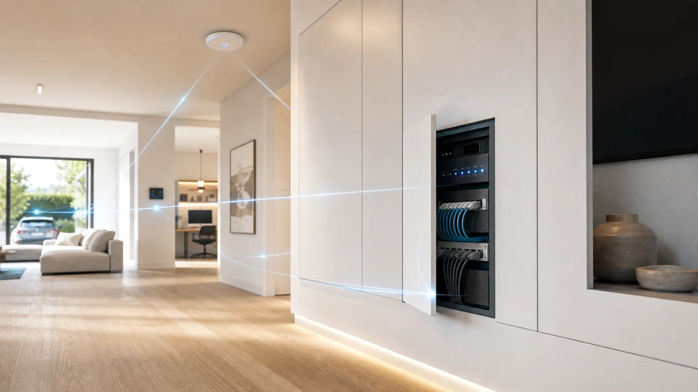
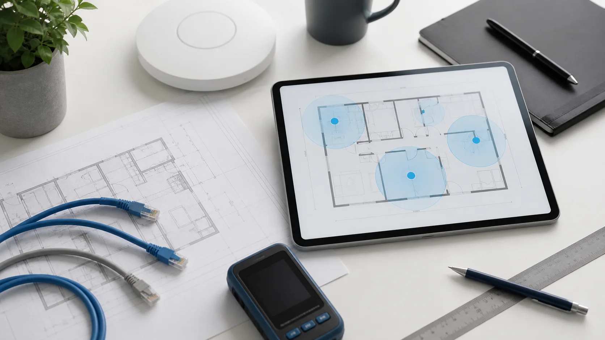
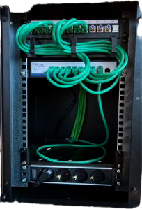
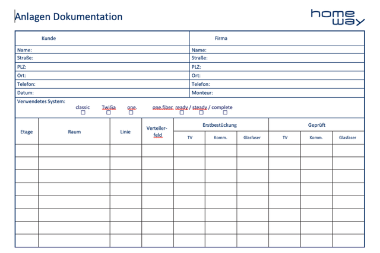
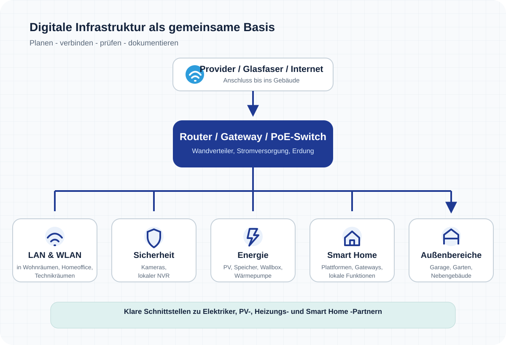

Eckdaten & Fotos senden
Beschreiben Sie kurz das Objekt und senden Sie bei Bedarf Fotos vom Verteiler oder einen Grundriss.
Digitale Infrastruktur · Wien · NÖ · Burgenland
Heimnetz, Glasfaser und WLAN professionell geplant und eingerichtet: Wir planen und verbinden Router, Netzwerkschrank, Switch, Glasfaser, Access Points sowie LAN- und TV-Anschlüsse zu einer leistungsstarken Netzwerkinfrastruktur – damit Homeoffice, Streaming, Gaming, Telefonie, TV, NAS, Kameras, PV, Wallbox, Wärmepumpe und weitere vernetzte Geräte zuverlässig funktionieren.
Der Elektriker schafft Leitungswege und Strom. Wir planen und integrieren die Netzwerktechnik und koordiniere die digitalen Schnittstellen zu den beteiligten Gewerken.
Sie müssen keine technischen Begriffe kennen. Eine kurze Beschreibung und, falls vorhanden, ein paar Fotos genügen.

Zwei Leistungsgruppen
Wählen Sie den Einstieg, der zu Ihrer Situation passt. Die technischen Details klären wir anschließend gemeinsam.
Strukturierte Verkabelung, zuverlässiges WLAN, zentral gesteuerte Netzwerktechnik und auf Wunsch Videoüberwachung – als klar abgestuftes Paket.
Leistungsgruppe 2LAN-Anschlüsse und WLAN-Abdeckung im bestehenden Haus oder in der Wohnung prüfen, dokumentieren und gezielt verbessern.
Für Bürogebäude, Co-Working Spaces, Gastronomie? Netzwerklösungen für kleine Betriebe ansehen →
Ein klarer erster Schritt
Sie erhalten zuerst eine persönliche Einordnung und entscheiden danach in Ruhe, wie es weitergeht.
Beschreiben Sie kurz das Objekt und senden Sie bei Bedarf Fotos vom Verteiler oder einen Grundriss.
Sie erhalten eine erste Einordnung, was wahrscheinlich nötig ist und ob ein Termin vor Ort sinnvoll ist.
Im Bestand schafft der Heimnetz-Check eine belastbare Grundlage. Für Neubau und Sanierung wählen wir gemeinsam das passende CONNECT-Paket.
Was Sie bekommen
Internet ist dort verfügbar, wo Sie es brauchen. Der Verteiler bleibt übersichtlich und die Übergabe nachvollziehbar dokumentiert.

Grundriss, Netzwerkdosen, Verteiler, Access Points sowie Bereiche wie Garage, Garten und der Provider-Anschluss werden von Anfang an in die Planung einbezogen.

Ein sauber aufgebauter Verteiler bildet die zentrale Stelle des Heimnetzes: Komponenten sind übersichtlich angeordnet, Leitungen gebündelt und alle Anschlüsse nachvollziehbar zusammengeführt.

Alle Netzwerkanschlüsse werden nachvollziehbar dokumentiert – inklusive Raumzuordnung, Leitungsführung, Portnummern im Netzwerkschrank, Dosenbelegung und Prüfergebnissen.
Leistungsgruppe 1
Von der strukturierten Verkabelung bis zum professionellen Heimnetz mit Videoüberwachung. Je nach Paket setzen wir Komponenten renomierter Hersteller ein.
Strukturierte Verkabelung mit zuverlässigem WLAN – von Anfang an sauber geplant und dokumentiert.
Mehr KomfortProfessionelles WLAN mit zentral gesteuerter Netzwerktechnik für eine einheitliche, erweiterbare Lösung.
Netzwerk & SicherheitProfessionelles Heimnetz inklusive Videoüberwachung und abgestimmter Netzwerkinfrastruktur.
Leistungsgruppe 2
Für Haus oder Wohnung: Wir testen vorhandene LAN-Anschlüsse, prüfen die WLAN-Abdeckung und zeigen verständlich auf, wo konkretes Optimierungspotential besteht.
Sie erhalten einen Bericht mit Empfehlungen sowie ein nachvollziehbares Angebot für die gewünschten Verbesserungen.
Digitale Haustechnik
Moderne Gebäude bestehen aus vielen vernetzten Systemen: Kameras, PV, Wallbox, Wärmepumpe, Smart Home oder Geräte in Garage und Garten. Die Grundlage dafür ist ein stabiles Netzwerk. Wir automatisieren nicht das Gebäude – wir schaffen die Infrastruktur, auf der moderne Gebäude zuverlässig funktionieren.

IP-Kameras benötigen eine stabile Datenverbindung. Wir planen PoE-Versorgung, Netzwerkanschlüsse, Switches und lokale Aufzeichnung als Teil einer professionellen Heimnetz-Infrastruktur.
Netzwerk & EnergieModerne Energiesysteme benötigen eine zuverlässige Datenverbindung. Wir planen und schaffen die notwendige Netzwerkinfrastruktur und stimmen die Schnittstellen mit Elektro-, PV- und Heizungsfachbetrieben ab.
Wir prüfen die Netzwerkvoraussetzungen vernetzter Systeme und berücksichtigen Anforderungen wie LAN, WLAN, PoE, Netzwerkanschlüsse und Erweiterbarkeit.
Wenn das Netzwerk weitere Bereiche versorgen soll
Die Erweiterung wird von Anfang an in die bestehende Netzwerkstruktur integriert – über LAN, WLAN, PoE und den zentralen Netzwerkschrank. Das passende System und die Komponenten werden darauf abgestimmt ausgewählt.
Decken- oder Wandlösungen sorgen für eine stabile WLAN-Versorgung und eine gleichmäßige Abdeckung im gesamten Gebäude.
Wir planen die notwendige Infrastruktur für IP-Kameras an Eingang, Einfahrt und weiteren Bereichen – mit geeigneten Netzwerkanschlüssen, PoE-Versorgung und passender Switch-Technik.
WLAN, LAN und PoE für Garage, Gartenhaus und Außenbereiche – vorbereitet für Wallbox, PV, Torsteuerung, Kameras und weitere vernetzte Anwendungen.
Klare Schnittstelle
Eine klare Aufgabenverteilung schafft Sicherheit im Projekt. Bauherr, Elektriker, Haustechnikpartner und Beratung & Technik arbeiten mit definierten Zuständigkeiten zusammen – für eine reibungslose Umsetzung der digitalen Infrastruktur.
Ratgeber & Planungshilfen
Die entscheidenden Weichen werden bereits in der Planungsphase gestellt – bei Leitungswegen, Netzwerkanschlüssen, Providerwahl und der späteren Erweiterbarkeit.
Eine strukturierte Checkliste für Dosen, Access Points, Glasfaser, Kameras, Energie, Garage, Garten, Reserven und Dokumentation.
BestandDaten über die Stromleitung, Netzwerk über Kabel oder drahtlose Verbindung – jede Technik hat ihre Einsatzbereiche. Wir erklären die Unterschiede und zeigen, welche Lösung für kritische Anwendungen wie Homeoffice, NAS, Kameras oder Energiegeräte geeignet ist.
Unverbindlicher erster Schritt
Sie brauchen noch keine fertige technische Lösung. Ein paar Eckdaten, Fotos oder ein Grundriss genügen, damit wir Ihr Heimnetz, Sicherheit, Energieanbindung oder Smart Home auf der Netzwerkseite einordnen können.
Kostenloser Erstkontakt · Umsetzung nur nach Ihrer Freigabe